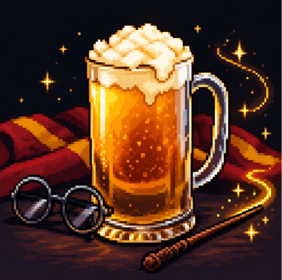

DESCRIÇÃO
Harry Potter e o Prisioneiro de Azkaban (2004) - A Cerveja Amanteigada (Butterbeer)
-> é descrita no universo de Harry Potter como uma bebida reconfortante, doce e mágica, servida
tanto quente quanto gelada.
*Aparição: 1 hora, 15 minutos e 20 segundos (01:15:20)*
INGREDIENTES
- 1/2 xícara (chá) de açúcar mascavo
- 2 colheres (sopa) de água
- 5 colheres (sopa) de manteiga sem sal
- Suco de 1/2 limão
- 1 pitada de sal
- 1 colher (chá) de essência de baunilha
- 1/4 de xícara de creme de leite fresco (ou de caixinha)
- Água com gás (ou soda) para completar a caneca
MODO DE PREPARO
- Fazer o caramelo: Em uma panela, coloque o açúcar mascavo e a água. Em fogo baixo, mexa até começar a borbulhar e deixe ferver por cerca de 5 minutos.
- Adicionar os ingredientes: Desligue o fogo e junte a manteiga sem sal, mexendo até derreter completamente. Acrescente o suco de meio limão, a pitada de sal, a essência de baunilha e o creme de leite.
- Misturar: Mexa bem até obter um xarope homogêneo.
- Montar a bebida: Coloque cerca de dois dedos do xarope de caramelo em uma caneca e complete com água com gás gelada para criar a espuma.